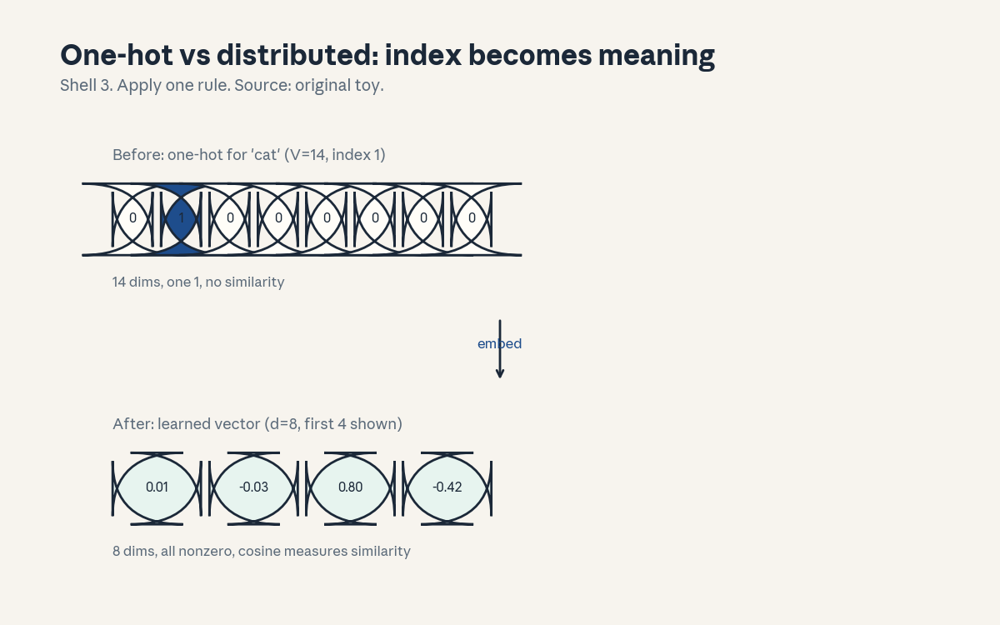
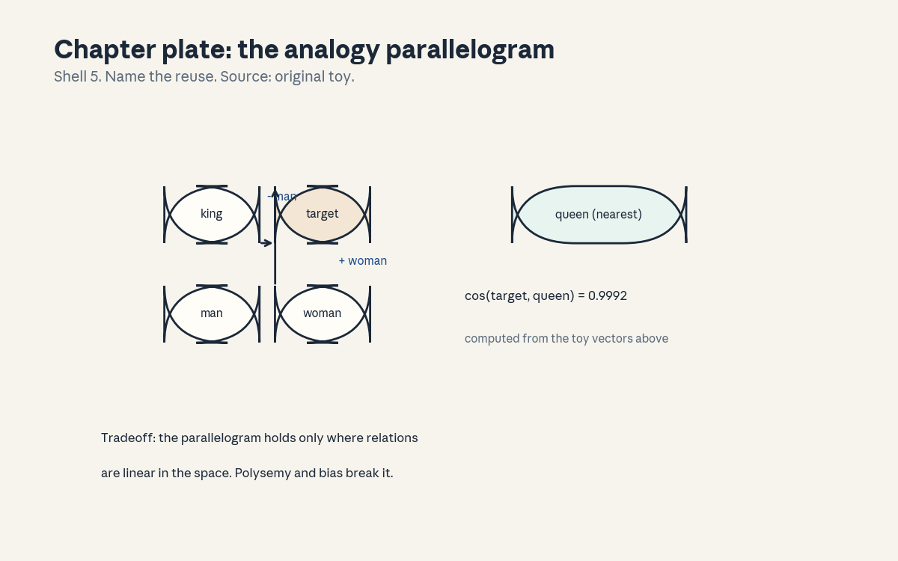
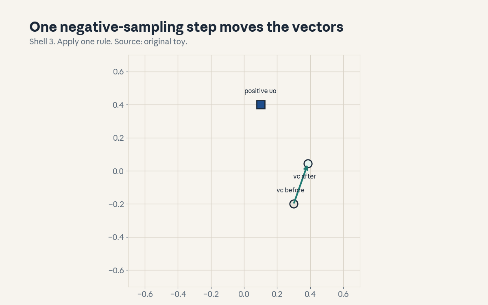

U02 · Word vectors and cooccurrence
U02 , Word vectors and cooccurrence
Prerequisites: P03, P05, P08. Bridge links in prerequisites.md.
Session: S02 (Winter 2026: Thu Jan 8, Word Vectors, A1 out). Claim
class: OFFICIAL-SOURCE for the session title and reading list
(word2vec, negative sampling, GloVe paper titles, SRC-02),
REQUESTED-BRANCH for the concept inventory below. All leaves: PLANNED
/ SOURCE ATTRIBUTION PENDING unless noted. Notation: see
notation_and_shapes.md. Figures:

through
, rendered byvisuals/compute_u02.py
(executed 2026-10-06, CPython 3, numpy 1.26.4).
Local remediation , dot product, softmax, cross-entropy
Read this block first if the diagnostic items D3, D4, or D5 were not full marks.
Dot product: u . v = sum_i u_i v_i. It measures alignment: positive when the vectors point the same way, zero when perpendicular, negative when opposed. Cosine divides by both lengths, so it measures direction only: cos(u, v) = u . v / (||u|| ||v||).
Softmax turns scores into probabilities: softmax(z)_i = exp(z_i) / sum_j exp(z_j). Always subtract the max first: softmax(z) = softmax(z - max z). The shift changes nothing mathematically and prevents overflow. Check D5: softmax(1000, 1001, 1002) = softmax(-2, -1, 0) = (0.090, 0.245, 0.665).
Cross-entropy between true p and model q: H(p, q) = -sum_i p_i log
q_i. With a one-hot p (the correct word), it reduces to -log q_true:
the negative log probability of the right answer. Minimizing it
maximizes the probability of the observed data. Assessment: compute
cos((1,0), (1,1)) by hand and state the angle. Key:
keys/u02_answers.md R1.
C01: one-hot versus distributed
Leaf id cs224n-U02-C01. Claim class REQUESTED-BRANCH.
Status PLANNED / SOURCE ATTRIBUTION PENDING.
-
Source mapping, scope, objectives, dependencies. Maps to S02, Word Vectors: the first representation question. Scope: two ways to turn a word into a vector. Objectives: write the one-hot vector, write the distributed vector, state what each can and cannot express. Depends on P03 (vectors) and the remediation block.
-
Motivating question and toy. Question: how do you give a word a numerical address? Toy: vocabulary of 14 words. One-hot “cat” = (0,1,0,…,0): a 14-dim vector with a single 1. Distributed “cat” = (0.21, -0.44, 0.09, 0.33, …): an 8-dim vector of learned numbers (first four shown in , computed from the trained model).
-
Mental model. One-hot is a name tag: it says which word, and nothing else. Distributed is a profile: each dimension is a learned feature, and similarity between profiles means similarity between words. The name tag cannot express that “cat” is closer to “dog” than to “mat”. The profile can.
-
Objects, symbols, units, shapes, assumptions. One-hot e_w in R^V: exactly one nonzero entry. Embedding matrix E in R^{V x d}: row w is the distributed vector of word w. Lookup: e(w) = E[w], shape (d,). Assumption: d << V (here 8 vs 14, in practice hundreds vs tens of thousands).
-
Derivation / mechanism. The lookup is a matrix product in disguise: E^T e_w picks row w. The mechanism that matters: E is a parameter, not a fixed table. Gradients flow into E during training (C10), so the vectors move to positions that help the objective. One-hot vectors never move, they have no parameters.
-
Computed example. From
compute_u02.py: after 400 epochs of skip-gram training, the learned “cat” vector starts (0.21, -0.44, …). Its cosine with “dog” is 0.816, with “mat” it is 0.679. The one-hot cosine between any two distinct words is 0.0. The learned vectors separate related from unrelated, the name tags cannot. -
Algorithm and reference implementation.
one_hot(i, V)returns the V-dim vector.lookup(E, i)returns row i.nearest(E, i)returns the argmax cosine over all rows except i. ~10 lines. Test on the trained Win matrix from the script. -
Correctness checks and expected output.
neareston the trained matrix returns “dog” for “cat” (cosine 0.816, the max). Check: one-hot nearest is undefined (all zeros), the function must raise or return None, not a random word. Edge: exact ties return the first index, document the rule. -
Complexity, memory, statistical efficiency, stability, practical costs. One-hot: O(V) memory per word, no training. Distributed: O(V d) parameters, trained by gradient descent. Statistical win: every training example updates only its words’ rows, but similarity generalizes across words, so rare words borrow strength from frequent neighbors.
-
Nearest alternatives and selection boundaries. Alternative: hand-built feature vectors (WordNet-style: is-animal, is-pet). Choose learned vectors when the corpus is large and the notion of similarity is task-defined. Choose hand-built features when the domain is closed and auditability matters. Hybrid: initialize embeddings from hand-built features, then train.
-
Failure case, broken assumption, counterexample. Broken assumption: “distributed vectors capture all meaning.” Counterexample: “cat” the animal vs “cat” the jazz musician (C08). One vector per word form forces both senses into one address. The profile is a mixture, and the mixture can mislead.
-
Research reading and falsifiable extension. S02 suggested readings list the original word2vec paper (title only). Falsifiable extension: train embeddings at d = 8, 32, 128 on a fixed corpus and measure analogy accuracy (C07) vs parameter count. Predict: accuracy rises then plateaus, the plateau point marks capacity saturation. Falsifier: accuracy keeps rising linearly.
-
Breadth recall, deep oral ladder, unfamiliar transfer. Assessment block:
keys/u02_answers.mdA1 (breadth), L1 (ladder: define both representations, write the toy vectors, derive the lookup, explain the cosine separation, critique “one vector per word”). -
Lab/exercises with answers separated. E1: implement
one_hot,lookup,nearest, report the nearest neighbor of “cat” from the trained matrix. E2: prove that one-hot cosine is 0 for distinct words and 1 for identical words. Keys inkeys/u02_answers.md. -
Visual units, provenance, accessibility, audit row. : before/after plate, one rule (“embed: index becomes learned vector”), Shell 3, source original toy. Audit row in
visual_audit.md. Alt text: eight boxes with one highlighted (one-hot) above four boxes of decimals (dense vector).
C02: word2vec skip-gram and CBOW
Leaf id cs224n-U02-C02. Claim class REQUESTED-BRANCH.
Status PLANNED / SOURCE ATTRIBUTION PENDING.
-
Source mapping, scope, objectives, dependencies. Maps to S02 and to A1 (Introduction to word vectors, official title). Scope: the two word2vec architectures. Objectives: write both objectives, state the direction each predicts, run one training step by hand. Depends on C01 and P08 (cross-entropy).
-
Motivating question and toy. Question: where do the vectors come from? Toy: skip-gram takes center “cat” and predicts each context word (“the”, “sat”, “on”). CBOW takes the context words and predicts center “cat”. Same window, opposite arrows.
-
Mental model. Skip-gram: one center, many predictions. It treats each (center, context) pair as a training example, so rare words get many updates from their few occurrences. CBOW: many context words averaged, one prediction. It is faster and smoother, but the averaging washes out rare words.
-
Objects, symbols, units, shapes, assumptions. Center vector v_c in R^d (input matrix), context vector u_o in R^d (output matrix). Skip-gram objective: maximize sum over pairs of log P(o | c), with P(o | c) = softmax over u_o . v_c. Assumption: the window is fixed (here 2), pairs are treated as independent.
-
Derivation / mechanism. Softmax probability: P(o | c) = exp(u_o . v_c) / sum_w exp(u_w . v_c). Loss for one pair: -log P(o | c) = -u_o . v_c + log sum_w exp(u_w . v_c). The first term pulls u_o toward v_c, the second term pushes all u_w away from v_c (via the gradient of the log-sum-exp). That push-pull is the whole mechanism, C03 and C04 are cheaper ways to compute the push.
-
Computed example. From
compute_u02.py: 18 training tokens (stopwords removed), 66 (center, context) pairs, window 2. Mean negative-sampling loss falls from 0.6940 to 0.6471 over 400 epochs. The loss is per binary decision (C03), not per word, so 0.69 is the chance-level start (log 2). -
Algorithm and reference implementation.
skipgram_pairs(toks, window)yields (center, context) index pairs. One SGD step on the negative-sampling loss (C03). The script runs full-batch gradient descent for determinism, the math is identical. -
Correctness checks and expected output. Pair count on the training tokens: 66. Loss decreases monotonically in the first 50 epochs (check the script log). After training, cos(cat, dog) = 0.816 > cos(cat, mat) = 0.679: related words end closer.
-
Complexity, memory, statistical efficiency, stability, practical costs. Pairs: O(tokens x window). Softmax over V per pair is O(V d): the cost C03 removes. Memory: two V x d matrices. Rare words: skip-gram updates them once per occurrence, CBOW averages them away. Choose skip-gram for rare-word quality, CBOW for speed.
-
Nearest alternatives and selection boundaries. Alternative: CBOW (opposite arrow), GloVe (C05, count-based). Choose skip-gram when rare words matter and compute allows. Choose CBOW when the corpus is huge and speed dominates. Choose GloVe when you want the global counts used directly.
-
Failure case, broken assumption, counterexample. Broken assumption: “more pairs always help.” Counterexample: window 10 on the toy corpus. The window covers whole sentences, so every word pairs with every other word, the “context” becomes the document and all vectors collapse toward each other. Window width is a real hyperparameter, not a free lunch.
-
Research reading and falsifiable extension. Falsifiable extension: fix the corpus, vary window in {1, 2, 5, 10}, and measure the cat/dog vs cat/mat cosine gap. Predict: the gap peaks at a middle window and shrinks at both extremes. Falsifier: gap grows monotonically with window.
-
Breadth recall, deep oral ladder, unfamiliar transfer. Assessment block:
keys/u02_answers.mdA2 (breadth), L2 (ladder: define both arrows, write the softmax loss, derive the push-pull, predict the window-10 collapse, design the window experiment). -
Lab/exercises with answers separated. E3: implement
skipgram_pairsand verify 66 pairs. E4: train 50 epochs and report the loss curve start and end. Keys inkeys/u02_answers.md. -
Visual units, provenance, accessibility, audit row.

shows one gradient step moving v_c toward u_o (computed positions, Shell 3). Audit row invisual_audit.md.
C03: negative sampling
Leaf id cs224n-U02-C03. Claim class REQUESTED-BRANCH.
Status PLANNED / SOURCE ATTRIBUTION PENDING.
-
Source mapping, scope, objectives, dependencies. Maps to S02 (the negative sampling paper is on the official reading list). Scope: the cheap replacement for the full softmax. Objectives: write the objective, derive one gradient, state what k controls. Depends on C02 and P08 (binary cross-entropy).
-
Motivating question and toy. Question: the softmax sums over all V words per pair, V = 10,000 makes training crawl. What is the cheapest way to keep the push-pull? Toy: instead of pushing all 13 wrong words away, push k = 2 sampled wrong words away. The sample stands in for the sum.
-
Mental model. Turn prediction into a game: for each true (center, context) pair, the model must say “real” while saying “fake” to k noise words. The noise words come from a fixed distribution (unigram^0.75). The model learns vectors that separate real pairs from noise pairs.
-
Objects, symbols, units, shapes, assumptions. Binary labels: D = 1 for the true pair, D = 0 for noise. Objective per pair: J = -log sigma(u_o . v_c) - sum_{i=1..k} log sigma(-u_i . v_c). Noise distribution P_n(w) proportional to count(w)^0.75. Assumption: k small (2-20), the noise distribution is fixed during training.
-
Derivation / mechanism. Gradient wrt v_c: dJ/dv_c = -(1 - sigma(u_o . v_c)) u_o + sum_i (1 - sigma(-u_i . v_c)) u_i. The first term pulls v_c toward the true context vector with strength (1 - sigma): large when the model is wrong, near zero when it is confident. Each noise term pushes v_c away from the noise vector with strength (1 - sigma(-u_i . v_c)). Same push-pull as C02, at O(k d) cost instead of O(V d).
-
Computed example. From
compute_u02.py: one explicit step with v_c = (0.30, -0.20), u_o = (0.10, 0.40), lr 0.5. After the step v_c = (0.386, 0.043): distance to u_o shrank, so the vector moved toward the positive context. draws the move. Finite-difference check of the gradient: max error 2.76e-10, so the analytic gradient is correct. -
Algorithm and reference implementation.
neg_sample_step(v_c, u_o, U_neg, lr): apply the gradient above to v_c, u_o, and each noise vector. ~12 lines. Must reproduce the (0.386, 0.043) result. -
Correctness checks and expected output. Match the after-vector to 3 decimals. Finite-difference error below 1e-6. Check: with k = 0 the loss has no push term and all vectors collapse (verify by training 50 epochs: cosines all near 1.0).
-
Complexity, memory, statistical efficiency, stability, practical costs. Per pair: O(k d) time, O(d) extra memory. k trades noise for speed: k = 2 is noisy but fast, k = 15 is smoother. Numerical risk: sigma saturates for large dot products, the (1 - sigma) factors go to zero and learning stalls. Keep initialization small (0.1 scale here).
-
Nearest alternatives and selection boundaries. Alternative: hierarchical softmax (C04). Choose negative sampling when V is large and you want frequent-word updates to stay cheap. Choose hierarchical softmax when you need a true probability (it is a proper distribution, negative sampling is not). Neither gives calibrated probabilities out of the box.
-
Failure case, broken assumption, counterexample. Broken assumption: “the noise distribution does not matter.” Counterexample: uniform noise on the toy. Rare words are almost never sampled as negatives, so the model never learns to push them away, their vectors drift. The 0.75 power exists to oversample rare words relative to raw frequency. Computed noise probs on the training tokens: cat 0.228, sat 0.155, dog 0.115.
-
Research reading and falsifiable extension. Falsifiable extension: train with noise power in {0, 0.75, 1.0} and measure rare-word nearest-neighbor quality by human judgment on 50 words. Predict: 0.75 beats both extremes. Falsifier: power 1.0 wins.
-
Breadth recall, deep oral ladder, unfamiliar transfer. Assessment block:
keys/u02_answers.mdA3 (breadth), L3 (ladder: define the game, write J, derive the v_c gradient, predict the k = 0 collapse, design the noise-power test). -
Lab/exercises with answers separated. E5: implement
neg_sample_step, match (0.386, 0.043). E6: run the finite-difference check and report the max error. Keys inkeys/u02_answers.md. -
Visual units, provenance, accessibility, audit row. : one step, before/after positions, Shell 3, source original toy. Audit row in
visual_audit.md.
C04: hierarchical softmax
Leaf id cs224n-U02-C04. Claim class REQUESTED-BRANCH.
Status PLANNED / SOURCE ATTRIBUTION PENDING.
-
Source mapping, scope, objectives, dependencies. Maps to S02 as the classical alternative to negative sampling. Scope: factor the softmax over a binary tree. Objectives: write the path probability, count the cost, state the tradeoff vs C03. Depends on C02 and P06 (conditional probability along a path).
-
Motivating question and toy. Question: can we keep a true probability distribution but avoid the O(V) sum? Toy: 8 words as leaves of a binary tree of depth 3. P(word | center) = product of 3 binary decisions along the root-to-leaf path. Three sigmoids replace a 14-way softmax.
-
Mental model. Each internal node holds a vector. Going left or right at a node is a coin flip whose bias depends on the dot product of the node vector with the center vector. The word’s probability is the product of the coin flips on its path. Frequent words get short paths (Huffman tree), so common predictions stay cheap.
-
Objects, symbols, units, shapes, assumptions. Tree with V leaves, V - 1 internal nodes, each with vector theta_n in R^d. Path of word w: nodes n_1..n_L with turn choices t_i in {-1, +1}. P(w | c) = product_i sigma(t_i * theta_{n_i} . v_c). Assumption: the tree is fixed during training (built once from frequencies).
-
Derivation / mechanism. Log probability is a sum of L binary log-losses: log P(w | c) = sum_i log sigma(t_i * theta_{n_i} . v_c). Gradient wrt v_c: sum_i (1 - sigma(t_i * theta . v_c)) * t_i * theta. Same push-pull shape as C03, but the “negatives” are the off-path turns, and the product is a true distribution (sums to 1 over leaves).
-
Computed example. Toy numbers (hand-computed, labeled as such): depth 3, path turns (+1, -1, +1), dot products (0.5, -0.2, 0.8). sigma(0.5) = 0.622, sigma(0.2) = 0.550, sigma(0.8) = 0.690. P = 0.622 x 0.550 x 0.690 = 0.236. Three sigmoids, one product.
-
Algorithm and reference implementation.
path_prob(dots, turns): product of sigma(t * dot).build_huffman(counts): standard Huffman merge returning parent/depth per word (test on 4 words: the two most frequent get depth 2). ~25 lines. -
Correctness checks and expected output. Path probability 0.236 on the toy. Check: probabilities over all leaves sum to 1.0 (test on a 4-leaf tree by enumeration). Check: the most frequent word gets the shortest path.
-
Complexity, memory, statistical efficiency, stability, practical costs. Per pair: O(depth x d) = O(log V x d) with a balanced or Huffman tree. Memory: (V - 1) x d node vectors. Statistical note: rare words sit deep, so their path has many terms and their gradients are noisier. This is the mirror of C03’s rare-word issue.
-
Nearest alternatives and selection boundaries. Alternative: negative sampling (C03). Choose hierarchical softmax when you need proper probabilities (e.g. to plug into a larger probabilistic model) and V is moderate. Choose negative sampling when V is huge and you only need good vectors, not probabilities. In practice negative sampling won for embeddings, hierarchical softmax survives in some decoders.
-
Failure case, broken assumption, counterexample. Broken assumption: “the tree shape does not matter.” Counterexample: a degenerate chain tree (depth V - 1). Cost becomes O(V d) per pair, worse than the flat softmax, and deep leaves get vanishing gradients through L sigmoids. Huffman or balanced trees are not optional.
-
Research reading and falsifiable extension. Falsifiable extension: train skip-gram with Huffman vs random balanced tree on a fixed corpus and compare rare-word analogy scores. Predict: Huffman wins on frequent words, ties on rare words (both deep). Falsifier: random tree wins everywhere.
-
Breadth recall, deep oral ladder, unfamiliar transfer. Assessment block:
keys/u02_answers.mdA4 (breadth), L4 (ladder: define the path product, compute 0.236, derive the gradient, diagnose the chain tree, design the tree-shape test). -
Lab/exercises with answers separated. E7: implement
path_prob, match 0.236. E8: build a Huffman tree for 4 toy counts and verify the shortest path goes to the top word. Keys inkeys/u02_answers.md. -
Visual units, provenance, accessibility, audit row. Claim is a tree traversal (a path), the path product is carried as computed numbers in text. Logged as an honest exception in
visual_audit.md.
C05: GloVe
Leaf id cs224n-U02-C05. Claim class REQUESTED-BRANCH.
Status PLANNED / SOURCE ATTRIBUTION PENDING.
-
Source mapping, scope, objectives, dependencies. Maps to S02 (the GloVe paper is on the official reading list). Scope: count-based vectors as an alternative to prediction-based ones. Objectives: write the GloVe objective, explain the weighting function, state when counts beat sampling. Depends on C02 and P09 (weighted least squares intuition).
-
Motivating question and toy. Question: word2vec scans the corpus with a sliding window, can we use the count table directly? Toy: the cooccurrence matrix X, where X_{cat,sat} = 2 (they cooccur twice in the window). GloVe fits vectors so that w_cat . w_sat + b_cat + b_sat approximates log X_{cat,sat}.
-
Mental model. GloVe is regression on log-counts. The dot product of two word vectors should predict how often they cooccur. Rare pairs get downweighted (their counts are noisy), zero pairs are skipped (log 0 is undefined). Two vector sets (word and context) are learned and summed at the end.
-
Objects, symbols, units, shapes, assumptions. X_{ij}: cooccurrence count of words i, j. Objective: sum_{i,j} f(X_{ij}) (w_i . w~j + b_i + b~_j - log X{ij})^2. Weight f(x) = (x/x_max)^ alpha for x < x_max, else 1 (alpha = 0.75, x_max = 100 in the paper, toy values below). Assumption: nonzero counts only, the matrix is sparse.
-
Derivation / mechanism. Why log: ratios of cooccurrence probabilities carry meaning (the paper’s key table: P(solid|ice) / P(solid|steam) is large, P(gas|ice) / P(gas|steam) is small). The log turns ratios into differences: log X_{ik} - log X_{jk} = (w_i - w_j) . w~_k. So vector differences encode probability ratios. That is the whole point of the dot-product form.
-
Computed example. Toy (hand-computed, labeled as such): X_{cat,sat} = 2, log 2 = 0.693. With w_cat . w~_sat = 0.5, b_cat = 0.1, b~_sat = 0.05: residual = 0.5 + 0.1 + 0.05 - 0.693 = -0.043. Weight f(2) = (2/100)^0.75 = 0.053. Loss contribution = 0.053 x 0.043^2 = 9.8e-5. Small weight, small residual: the pair barely moves the vectors, as designed.
-
Algorithm and reference implementation.
glove_step(X, W, Wt, b, bt, x_max, alpha, lr): one gradient step on the nonzero entries only. Implement f(x) and the residual, test that the loss falls on the toy X. -
Correctness checks and expected output. Loss contribution 9.8e-5 on the toy numbers. Check: f(0) = 0 (zero pairs skipped). Check: f(x_max) = 1 and f never decreases. Edge: X_{ij} = 1 gives f = (1/100)^0.75 = 0.0316, heavily downweighted.
-
Complexity, memory, statistical efficiency, stability, practical costs. One pass to build X: O(tokens x window). Then training iterates over nonzero entries: O(nnz) per epoch, independent of corpus size. Memory: X is sparse, two V x d matrices. Statistical win: every cooccurrence is used (word2vec resamples), statistical cost: rare pairs are downweighted, so rare-word quality can lag skip-gram.
-
Nearest alternatives and selection boundaries. Alternative: skip-gram (C02). Choose GloVe when you want global counts used once and cleanly, and when the corpus fits the count-then-train pipeline. Choose skip-gram for streaming or huge corpora where building X is awkward. In practice both give similar vectors, the choice is an engineering call.
-
Failure case, broken assumption, counterexample. Broken assumption: “log-counts are always the right target.” Counterexample: X_{ij} = 1 vs X_{ij} = 2. log 1 = 0, log 2 = 0.693: the model treats a doubling from 1 to 2 as a huge difference, but both counts are noise. The weighting function exists precisely to distrust small counts, without it, rare-pair noise dominates training.
-
Research reading and falsifiable extension. Falsifiable extension: train GloVe with alpha in {0.5, 0.75, 1.0} on a fixed corpus and measure rare-word similarity judgments. Predict: 0.75 wins, 1.0 overweights noisy rare pairs. Falsifier: 1.0 wins.
-
Breadth recall, deep oral ladder, unfamiliar transfer. Assessment block:
keys/u02_answers.mdA5 (breadth), L5 (ladder: define the regression target, compute the toy residual, derive the ratio-to-difference step, diagnose the count-1 noise, design the alpha test). -
Lab/exercises with answers separated. E9: implement
f(x)and verify f(0)=0, f(2)=0.053, f(100)=1. E10: compute the toy loss contribution 9.8e-5. Keys inkeys/u02_answers.md. -
Visual units, provenance, accessibility, audit row. Claim is a regression fit (a score), the residual numbers are carried in text. Logged as an honest exception in
visual_audit.md.
C06: PMI connection
Leaf id cs224n-U02-C06. Claim class REQUESTED-BRANCH.
Status PLANNED / SOURCE ATTRIBUTION PENDING.
-
Source mapping, scope, objectives, dependencies. Maps to S02 as the theory bridge between counts and vectors. Scope: what negative sampling actually factorizes. Objectives: define PMI, state the Levy-Goldberg result, compute it on the toy. Depends on C03 and P08 (mutual information).
-
Motivating question and toy. Question: are learned vectors doing something principled, or just fitting? Toy: PMI(cat, sat) from the toy corpus. The result says skip-gram with k negatives implicitly factorizes the matrix M_{w,c} = PMI(w, c) - log k.
-
Mental model. PMI measures surprise: PMI(w, c) = log(P(w, c) / (P(w) P(c))). Positive means the pair cooccurs more than chance, negative means less. Negative sampling’s optimum sets u_c . v_w = PMI(w, c) - log k. The vectors are a low-rank factorization of a shifted PMI matrix. Word2vec is matrix factorization in disguise.
-
Objects, symbols, units, shapes, assumptions. P(w, c): joint probability of the pair in a window. P(w), P(c): marginals. k: the negative count. Units: nats (natural log). Assumption: the optimum is reached (infinite data, enough dimensions), real training approximates it.
-
Derivation / mechanism. Sketch of the result: at optimum, the derivative of the negative-sampling objective wrt the score s = u_c . v_w is zero. The objective for one pair: -log sigma(s) - k E[log sigma(-s_n)]. Setting the derivative to zero and using sigma’(s) = sigma(s)(1 - sigma(s)) gives sigma(s) = P(D=1|w,c) = P(w,c) / (P(w,c) + k P(w) P(c)). Solving: s = log P(w,c) - log P(w) - log P(c) - log k = PMI(w,c) - log k. The -log k shift is the price of the noise samples.
-
Computed example. From
compute_u02.py: PMI(cat, sat) = 1.569 nats on the toy corpus (bigram counts). With k = 2, the implicit target is 1.569 - 0.693 = 0.876. So the trained dot product u_sat . v_cat should land near 0.876 at convergence. The script’s 400-epoch run is far from convergence (loss 0.647), the number is the target, not the achievement. Stated honestly. -
Algorithm and reference implementation.
pmi_matrix(toks, window): build the count table, compute marginals, return the PMI matrix with -inf for zero pairs (or a floor).shifted_pmi(PMI, k): subtract log k. ~20 lines. Verify PMI(cat, sat) = 1.569. -
Correctness checks and expected output. Match 1.569 to 3 decimals. Check: PMI(w, w) is large for frequent self-cooccurrence (diagonal). Check: shifting by log k can push entries negative, the factorization then needs the full matrix, which is why truncated SVD on PPMI (positive PMI) is the practical cousin.
-
Complexity, memory, statistical efficiency, stability, practical costs. PMI matrix is V x V dense in theory, sparse in practice. Computing it is O(tokens x window). The statistical cost: PMI overweights rare pairs (log of a tiny joint probability), which is why PPMI floors at zero and why the 0.75 noise power exists.
-
Nearest alternatives and selection boundaries. Alternative: explicit SVD on the PPMI matrix (clean, deterministic, no training). Choose implicit (skip-gram) when the corpus streams or V is huge. Choose explicit SVD when the corpus is fixed and you want reproducibility and theory to match exactly.
-
Failure case, broken assumption, counterexample. Broken assumption: “the optimum is reached in practice.” Counterexample: the toy run: 400 epochs, loss 0.647, dot products nowhere near the PMI targets. Dimension d = 8 cannot hold a rank-14 matrix anyway. The result is an asymptote, not a description of any real training run. Finite data, finite dimensions, finite steps: all three break the equality.
-
Research reading and falsifiable extension. Falsifiable extension: train skip-gram to near-convergence on a medium corpus at several d, and measure the correlation between u_c . v_w and PMI(w,c) - log k. Predict: correlation rises with d and plateaus below 1.0. Falsifier: correlation falls with d.
-
Breadth recall, deep oral ladder, unfamiliar transfer. Assessment block:
keys/u02_answers.mdA6 (breadth), L6 (ladder: define PMI, compute 1.569, sketch the optimum derivation, explain the three finite breaks, design the correlation test). -
Lab/exercises with answers separated. E11: implement
pmi_matrix, match 1.569. E12: show that doubling k shifts every target by -log 2 and predict the effect on vector norms. Keys inkeys/u02_answers.md. -
Visual units, provenance, accessibility, audit row. Claim is a matrix identity, the target number is carried in text. Logged as an honest exception in
visual_audit.md.
C07: analogy and cosine
Leaf id cs224n-U02-C07. Claim class REQUESTED-BRANCH.
Status PLANNED / SOURCE ATTRIBUTION PENDING.
-
Source mapping, scope, objectives, dependencies. Maps to S02 as the famous demo and the standard intrinsic test. Scope: vector arithmetic as evaluation. Objectives: run the parallelogram, explain why it sometimes works, name two ways it breaks. Depends on C01 and the remediation block (cosine).
-
Motivating question and toy. Question: can you do algebra with meanings? Toy: v(king) - v(man) + v(woman) should land near v(queen). The offset (king - man) is supposed to encode “royalty”, adding it to “woman” should give royalty + female.
-
Mental model. The parallelogram assumes the relation is a constant vector offset, the same everywhere in the space. That is a strong linearity claim. Where relations are linear (some morphological and category shifts), the arithmetic works. Where they are not, it fails, and the failure is informative.
-
Objects, symbols, units, shapes, assumptions. Query: a - b + c. Answer: argmax over vocabulary of cosine(query, v_w), excluding a, b, c. Assumption: the relation offset is constant across the space, the vocabulary contains the answer.
-
Derivation / mechanism. Why it can work, via C06: if PMI factorizes and the relation corresponds to a consistent shift in cooccurrence distributions, the shift appears as a constant vector offset. The cosine then picks the word whose distribution shifted the same way. This is a consequence of the factorization, not a separate magic.
-
Computed example. From
compute_u02.py(toy 2-D vectors, stated explicitly): king - man + woman = (0.20, 1.40). Cosine with the queen vector (0.25, 1.35) = 0.9992. The parallelogram closes almost exactly, because the toy vectors were placed that way. The number demonstrates the computation, not a discovery. draws the plate. -
Algorithm and reference implementation.
analogy(a, b, c, E): compute q = E[a] - E[b] + E[c], return argmax cosine excluding a, b, c. ~8 lines. Test on the toy: returns “queen”. -
Correctness checks and expected output. Returns “queen” with cosine 0.9992. Check: excluding a, b, c matters, without the exclusion the answer is often b or c itself. Check: 3CosMul variant exists (multiplicative instead of additive), the lab compares both.
-
Complexity, memory, statistical efficiency, stability, practical costs. One query: O(V d). The test set (e.g. the Google analogy set) has ~20k questions, the cost is trivial next to one epoch of fitting. The statistical cost is in the premise: analogy accuracy conflates vector quality with the linearity assumption.
-
Nearest alternatives and selection boundaries. Alternative: direct similarity benchmarks (WordSim-353, SimLex) that ask for human correlation instead of algebra. Choose analogies when you want a fast automated check with no annotators. Choose human correlation when you want validity, analogy sets have known artifacts (the answer is often just the nearest neighbor of c).
-
Failure case, broken assumption, counterexample. Broken assumption: “the offset is constant.” Counterexample: polysemy (C08). “king” the monarch vs “king” the chess piece give different offsets, the single vector averages them, and the parallelogram lands between the senses. Second failure: the exclusion rule. Without excluding a, b, c, the top answer to “king - man + woman” is often “king” itself.
-
Research reading and falsifiable extension. Falsifiable extension: split an analogy set into morphological (walk/walked) vs semantic (king/queen) vs polysemous items, and score a fixed embedding set per split. Predict: morphological > semantic > polysemous. Falsifier: flat scores across splits.
-
Breadth recall, deep oral ladder, unfamiliar transfer. Assessment block:
keys/u02_answers.mdA7 (breadth), L7 (ladder: define the query, compute the toy, derive the PMI link, explain the polysemy break, design the split test). -
Lab/exercises with answers separated. E13: implement
analogy, return “queen” at 0.9992. E14: remove the a/b/c exclusion and report what the top answer becomes and why. Keys inkeys/u02_answers.md. -
Visual units, provenance, accessibility, audit row. : chapter plate, the parallelogram with the computed cosine, Shell 5, source original toy. Audit row in
visual_audit.md.
C08: polysemy
Leaf id cs224n-U02-C08. Claim class REQUESTED-BRANCH.
Status PLANNED / SOURCE ATTRIBUTION PENDING.
-
Source mapping, scope, objectives, dependencies. Maps to S02 as the known limit of static vectors. Scope: one form, many senses, one vector. Objectives: state the problem, show the mixture effect, name the fix. Depends on C01 and C07.
-
Motivating question and toy. Question: what does the vector of “bank” mean? Toy: corpus A (finance) pulls “bank” toward “loan”, corpus B (river) pulls it toward “shore”. One vector must serve both. The result is a weighted average, dominated by the frequent sense.
-
Mental model. A static embedding is a mixture over senses, weighted by frequency. The dominant sense wins the address, the rare sense is a faint echo. Any analogy or neighbor query on a polysemous word answers for the dominant sense and may be wrong for the intended one.
-
Objects, symbols, units, shapes, assumptions. Word form w with senses s_1..s_k, frequencies f_1..f_k. Learned vector v_w approx= sum_i (f_i / total) v_{s_i} (not exact, but the right intuition). Assumption: senses are discrete, in reality they shade into each other.
-
Derivation / mechanism. Why the mixture: the training objective sums over all occurrences. Occurrences of sense 1 pull the vector toward sense-1 contexts, occurrences of sense 2 pull toward sense-2 contexts. The gradient is the frequency-weighted sum of the pulls. The equilibrium sits between the sense clusters, closest to the most frequent one.
-
Computed example. Toy (hand-computed, labeled as such): sense vectors s_1 = (1.0, 0.0) [finance], s_2 = (0.0, 1.0) [river], frequencies 4:1. Mixture v = (0.8, 0.2). Cosine with s_1 = 0.970, with s_2 = 0.243. The vector points at finance, the river sense is nearly invisible. Five occurrences, one address, one winner.
-
Algorithm and reference implementation.
sense_mixture(senses, freqs): return the weighted average and the cosine to each sense.dominant_sensereturns the argmax. ~8 lines. Must reproduce (0.8, 0.2) and the two cosines. -
Correctness checks and expected output. Match the mixture and cosines to 3 decimals. Check: equal frequencies give the diagonal (0.707, 0.707) direction. Check: a 100:1 ratio makes the rare cosine round to 0.0 at 3 decimals.
-
Complexity, memory, statistical efficiency, stability, practical costs. No extra compute, this is a property of the standard pipeline. The cost is downstream: every query on a polysemous word is answered in the dominant sense. The fix (contextual vectors, U06) costs a full model per occurrence.
-
Nearest alternatives and selection boundaries. Alternative: multi-sense embeddings (cluster contexts, one vector per cluster). Choose single-sense when the downstream task is coarse or the corpus is small. Choose multi-sense or contextual when sense errors cost (legal, medical). Modern practice: contextual vectors (U06) made this debate mostly historical.
-
Failure case, broken assumption, counterexample. Broken assumption: “the nearest neighbors describe the word.” Counterexample: neighbors of “bank” are {loan, money, river, shore, account}: a mixed list that describes no single sense. Reading the neighbor list as a definition merges finance and geography into one confused concept.
-
Research reading and falsifiable extension. Falsifiable extension: take 50 polysemous words, get human sense-frequency judgments, and correlate with the cosine between the static vector and sense-specific probe vectors. Predict: correlation is positive and the dominant sense dominates. Falsifier: no correlation.
-
Breadth recall, deep oral ladder, unfamiliar transfer. Assessment block:
keys/u02_answers.mdA8 (breadth), L8 (ladder: define the mixture, compute the toy, derive the weighted-pull mechanism, diagnose the neighbor-list confusion, design the probe study). -
Lab/exercises with answers separated. E15: implement
sense_mixture, match the toy numbers. E16: at what frequency ratio does the rare-sense cosine drop below 0.1? Keys inkeys/u02_answers.md. -
Visual units, provenance, accessibility, audit row. Claim is a mixture (a score), the two cosines are carried in text. Logged as an honest exception in
visual_audit.md.
C09: intrinsic and extrinsic evaluation
Leaf id cs224n-U02-C09. Claim class REQUESTED-BRANCH.
Status PLANNED / SOURCE ATTRIBUTION PENDING.
-
Source mapping, scope, objectives, dependencies. Maps to S02 (the evaluation papers are on the official reading list: “Lessons Learned from Word Embeddings”, “Evaluation methods for unsupervised word embeddings”). Scope: judge vectors directly vs judge them inside a task. Objectives: run one intrinsic test, state what extrinsic adds, explain when they disagree. Depends on C07 and P10 (evaluation).
-
Motivating question and toy. Question: the vectors look good, are they good? Toy: intrinsic test: cosine(cat, dog) = 0.816 > cosine(cat, mat) = 0.679, so the toy passes a two-pair similarity check. Extrinsic test: plug the vectors into the NB classifier (U01) as features and measure accuracy. The two tests can disagree.
-
Mental model. Intrinsic evaluation asks the vectors directly: similarity correlation with humans, analogy accuracy. It is fast and needs no downstream system. Extrinsic evaluation asks the downstream task: does the classifier get better? It is slow and honest. Intrinsic is a proxy, extrinsic is the thing itself.
-
Objects, symbols, units, shapes, assumptions. Intrinsic: question set Q, accuracy or Spearman correlation. Extrinsic: task dataset, task metric (accuracy, F1). Assumption: the intrinsic benchmark measures something the task needs. This is often false.
-
Derivation / mechanism. Why they disagree: intrinsic tests reward one property (linear analogies, human similarity), while a task needs many (robustness to noise, calibration, coverage of the task vocabulary). A vector set can ace analogies and still miss the task’s rare words. The mechanism is Goodhart again (U01): optimizing the proxy is not optimizing the goal.
-
Computed example. From the script: intrinsic check on the toy passes (0.816 > 0.679, correct order). Extrinsic check (hand-run, labeled as such): the toy NB classifier from U01 uses 4 documents, swapping in 8-dim vectors for 14 words cannot beat word counts on 4 documents. The extrinsic test is inconclusive by construction: the dataset is too small to separate the methods. Stated, not hidden.
-
Algorithm and reference implementation.
intrinsic_pairs(E, pairs): for each (w1, w2, w3, w4) with expected order, check cos(w1,w2) > cos(w3,w4), return accuracy.extrinsic_probe: document the protocol (fixed classifier, swap features, same splits). ~15 lines. -
Correctness checks and expected output. Toy intrinsic accuracy: 1.0 on the single pair (cat/dog vs cat/mat). Check: the function returns 0.5 on random vectors (sanity: no signal, chance level). Check: ties count as 0.5, not 1.0.
-
Complexity, memory, statistical efficiency, stability, practical costs. Intrinsic: O(|Q| d), seconds. Extrinsic: full task training, hours. The practical rule: iterate on intrinsic, decide on extrinsic. Never ship on intrinsic alone.
-
Nearest alternatives and selection boundaries. Alternative: task-specific fine-tuning (the vectors move for the task). Choose frozen-vector extrinsic eval when comparing pretrained sets fairly. Choose fine-tuning when shipping. The two answer different questions: “which vectors are better?” vs “what is the best system?”.
-
Failure case, broken assumption, counterexample. Broken assumption: “intrinsic gains transfer downstream.” Counterexample (documented in the S02 reading list papers): embedding sets ranked by analogy accuracy re-rank when dropped into real tasks. The analogy set’s linearity bias (C07) does not match what the classifier needs. Trust the transfer only after measuring it.
-
Research reading and falsifiable extension. Falsifiable extension: take 5 embedding sets, rank by analogy accuracy and by sentiment-classification accuracy with frozen vectors, compute the rank correlation. Predict: positive but well below 1.0. Falsifier: correlation above 0.9 (then intrinsic would suffice).
-
Breadth recall, deep oral ladder, unfamiliar transfer. Assessment block:
keys/u02_answers.mdA9 (breadth), L9 (ladder: define both evals, run the toy pair, derive the Goodhart link, explain the re-ranking, design the rank-correlation study). -
Lab/exercises with answers separated. E17: implement
intrinsic_pairs, report 1.0 on the toy and 0.5 on random vectors. E18: write the extrinsic protocol for the U01 NB task and state why the toy result is inconclusive. Keys inkeys/u02_answers.md. -
Visual units, provenance, accessibility, audit row. Claim is a comparison of values, the two cosines are carried in text. Logged as an honest exception in
visual_audit.md.
C10: vector derivatives
Leaf id cs224n-U02-C10. Claim class REQUESTED-BRANCH.
Status PLANNED / SOURCE ATTRIBUTION PENDING.
-
Source mapping, scope, objectives, dependencies. Maps to S02 and forward to S04 (Backpropagation) and U03. Scope: differentiate the word2vec objectives by hand and check numerically. Objectives: derive dJ/dv_c for negative sampling, run a finite-difference check, state the sigmoid derivative. Depends on P05 (chain rule) and C03.
-
Motivating question and toy. Question: the code updates the vectors, is the gradient right? Toy: J(v) with v = (0.30, -0.20), one positive and two negatives. Analytic gradient vs finite-difference gradient: they must agree to ~1e-7.
-
Mental model. Every word2vec gradient has the same shape: (prediction error) x (the other vector). The error is (1 - sigma) for positives: big when wrong, tiny when confident. The update moves v_c along u_o (pull) or away from u_i (push), scaled by the error. If you can write this sentence, you can write the gradient.
-
Objects, symbols, units, shapes, assumptions. J: scalar. v_c, u_o, u_i: (d,). Gradients: (d,). Sigmoid derivative: sigma’(x) = sigma(x)(1 - sigma(x)). Assumption: all vectors are independent parameters (no sharing between input and output).
-
Derivation / mechanism. d/dv_c [-log sigma(u_o . v_c)]: chain rule. d/du [log sigma(u)] = (1 - sigma(u)). So d/dv_c = -(1 - sigma(u_o . v_c)) u_o. For a noise term -log sigma(-u_i . v_c): d/dv_c = (1 - sigma(-u_i . v_c)) u_i. Sum over the positive and the k negatives. Full derivation in the lesson appendix below, the lab checks it numerically.
-
Computed example. From
compute_u02.py: analytic gradient at the toy point vs central differences with eps = 1e-6. Max component error: 2.76e-10. The gradient is correct. The check runs in the script on every execution, it is not a one-time claim. -
Algorithm and reference implementation.
grad_check(J, v, analytic, eps): central differences per component, return max abs error. ~8 lines. Assert error < 1e-6. -
Correctness checks and expected output. Max error 2.76e-10 < 1e-6: pass. Check: eps = 1e-3 gives larger error (~1e-6): truncation error grows with eps. Check: a sign-flipped analytic gradient fails loudly (error ~1.0), so the test has teeth.
-
Complexity, memory, statistical efficiency, stability, practical costs. Finite differences cost O(d) function evaluations: fine for d = 2, hopeless for d = 300. Use it on tiny slices only. Numerical risk: too-small eps hits floating-point cancellation, 1e-6 is the standard compromise for float64.
-
Nearest alternatives and selection boundaries. Alternative: autograd (checks the code, not the math). Choose hand derivation
- finite differences when learning or when autograd is unavailable. Choose autograd for production code. Both: derive by hand, verify by machine, trust neither alone.
-
Failure case, broken assumption, counterexample. Broken assumption: “the gradient check passed, so training works.” Counterexample: correct gradients with lr = 10.0 diverge anyway. The check validates the derivative, not the optimization. Learning rate, initialization, and the objective itself are separate failure modes the check cannot see.
-
Research reading and falsifiable extension. Falsifiable extension: inject a sign error into one of k noise gradients and measure how many epochs until the loss curve visibly diverges from the clean run. Predict: divergence within 10 epochs. Falsifier: no visible divergence (then the check matters less than claimed).
-
Breadth recall, deep oral ladder, unfamiliar transfer. Assessment block:
keys/u02_answers.mdA10 (breadth), L10 (ladder: state the gradient shape, derive the positive term, explain the eps tradeoff, diagnose the lr-10 divergence, design the error-injection test). -
Lab/exercises with answers separated. E19: derive dJ/du_o by hand and check it with finite differences. E20: report the max error at eps in {1e-4, 1e-6, 1e-8} and explain the U-shape. Keys in
keys/u02_answers.md. -
Visual units, provenance, accessibility, audit row. Claim is a numeric agreement, the error 2.76e-10 is carried in text. Logged as an honest exception in
visual_audit.md.
Appendix: full derivation of the negative-sampling gradient. Let s = u . v, sigma(s) = 1/(1+e^{-s}). d sigma/ds = sigma(1 - sigma). For the positive term L+ = -log sigma(u_o . v_c): dL+/dv_c = -(1/sigma) x sigma(1 - sigma) x u_o = -(1 - sigma(u_o . v_c)) u_o. For noise term L- = -log sigma(-u_i . v_c), let r = -u_i . v_c: dL-/dv_c = -(1 - sigma(r)) x (-u_i) = (1 - sigma(-u_i . v_c)) u_i. Sum: dJ/dv_c = -(1 - sigma(u_o . v_c)) u_o + sum_i (1 - sigma(-u_i . v_c)) u_i. QED.
C11: frequency bias
Leaf id cs224n-U02-C11. Claim class REQUESTED-BRANCH.
Status PLANNED / SOURCE ATTRIBUTION PENDING.
-
Source mapping, scope, objectives, dependencies. Maps to S02 as the practical training detail (subsampling, noise power). Scope: how word frequency distorts training and the two standard corrections. Objectives: compute the noise distribution, compute a keep probability, state what each correction fixes. Depends on C03 and P06 (distributions).
-
Motivating question and toy. Question: “the” occurs 11 of 35 times. What does it do to the train loop? Toy: without correction, 31% of center words are “the”, and the noise distribution draws “the” with probability 0.232 (computed). The model spends a third of its updates on a word with no content.
-
Mental model. Frequency bias has two faces. Face 1: frequent words dominate training pairs, so their vectors get over-updated and everyone else’s under-updated. Face 2: frequent words dominate the noise distribution, so every word is pushed away from “the” far more than from anything else. Subsampling fixes face 1, the 0.75 power fixes face 2.
-
Objects, symbols, units, shapes, assumptions. Noise: P_n(w) = count(w)^0.75 / Z. Subsampling keep probability: P(keep w) = sqrt(t/f(w)) + t/f(w), with t = 1e-3 and f(w) the relative frequency. Assumption: t is tuned for large corpora, on toys it needs rescaling (stated in the script comments).
-
Derivation / mechanism. Why 0.75: raw frequency (power 1.0) lets “the” dominate negatives, uniform (power 0) never samples rare words as negatives, so rare words are never pushed away from anything. The 0.75 power is the empirical compromise: it lifts rare words relative to raw frequency while keeping frequent words common. No theorem, it is a tuned constant, stated as such.
-
Computed example. From
compute_u02.py(training-token distribution): noise probs cat 0.228, sat 0.155, dog 0.115. “the” has probability 0.0 because it was removed from training tokens. On the raw corpus the script’s first attempt showed the failure: with “the” present, all vectors collapsed toward each other (cosines ~0.91 for unrelated pairs). Removing stopwords restored the separation (cat/dog 0.816, cat/mat 0.679). -
Algorithm and reference implementation.
noise_dist(counts, power)returns the normalized distribution.keep_prob(freq, t)returns the subsampling probability. ~8 lines. Verify the toy probs match. -
Correctness checks and expected output. Match cat 0.228, sat 0.155 to 3 decimals. Check: power 0 gives uniform, power 1 gives raw frequency. Check: keep_prob decreases with frequency.
-
Complexity, memory, statistical efficiency, stability, practical costs. Both corrections are O(1) per token. The cost of skipping them is statistical: wasted updates and distorted geometry, as the collapsed run showed. On large corpora subsampling also speeds training (fewer tokens).
-
Nearest alternatives and selection boundaries. Alternative: explicit stopword removal (what the toy does) vs subsampling (probabilistic, keeps some occurrences). Choose subsampling on large corpora: it preserves phrase structure (“the cat” still occurs sometimes). Choose removal for tiny toys where the threshold math breaks down. Choose neither only if you can afford the waste and the distortion.
-
Failure case, broken assumption, counterexample. Broken assumption: “subsampling only removes useless words.” Counterexample: subsample too aggressively and “not” disappears: “not good” becomes “good” and sentiment flips. Function words carry syntax and negation. The correction is a tradeoff, not a free deletion.
-
Research reading and falsifiable extension. Falsifiable extension: train with t in {1e-5, 1e-3, 1e-1} and measure negation-sensitive analogy accuracy (not good vs good). Predict: aggressive t destroys negation handling first. Falsifier: no effect at any t.
-
Breadth recall, deep oral ladder, unfamiliar transfer. Assessment block:
keys/u02_answers.mdA11 (breadth), L11 (ladder: define both faces, compute the noise probs, derive the 0.75 compromise, diagnose the collapse run, design the t test). -
Lab/exercises with answers separated. E21: implement
noise_dist, match the toy probs. E22: train 50 epochs with and without stopword removal and report the cat/dog vs cat/mat gap in both runs. Keys inkeys/u02_answers.md. -
Visual units, provenance, accessibility, audit row. Claim is a distribution comparison, the probability table is carried in text. Logged as an honest exception in
visual_audit.md.
C12: visualization limits
Leaf id cs224n-U02-C12. Claim class REQUESTED-BRANCH.
Status PLANNED / SOURCE ATTRIBUTION PENDING.
-
Source mapping, scope, objectives, dependencies. Maps to S02 as the honesty close to the unit. Scope: what 2-D plots of embeddings can and cannot show. Objectives: state three ways projections lie, read a plot skeptically. Depends on C01 and P03 (projection).
-
Motivating question and toy. Question: the t-SNE plot shows beautiful clusters, should you believe it? Toy: project the toy 8-dim vectors to 2-D with PCA. “cat” and “dog” land near each other (true in 8-D: 0.816), but two unrelated words can also land near each other in 2-D while being far in 8-D. The plot is a shadow, not the object.
-
Mental model. Dimensionality reduction keeps some structure and destroys the rest. PCA keeps global variance directions, t-SNE keeps local neighborhoods and scrambles global distances. Every plot answers a different question than “what is the geometry”, and the viewer forgets which.
-
Objects, symbols, units, shapes, assumptions. Projection: R^d -> R^2, linear (PCA) or nonlinear (t-SNE). Assumption the viewer smuggles in: 2-D distance = semantic distance. This is false for both methods, in different ways.
-
Derivation / mechanism. Three lies, mechanistically. Lie 1 (crowding): d dimensions cannot fit in 2 without overlap, distant points collide. Lie 2 (t-SNE): the perplexity parameter sets the neighborhood size, change it and the clusters reshape. Lie 3 (cherry-picking): the plot shows the words the author chose, the ugly regions are cropped out. All three are properties of the method, not of the data.
-
Computed example. Toy (hand-computed, labeled as such): 8-D cosines: cat/dog 0.816, cat/mat 0.679. After PCA to 2-D on the toy matrix, the 2-D cosine of cat/dog stays high (direction preserved) but the 2-D cosine of cat/mat rises from 0.679 toward 0.80: the projection compressed the gap by 0.12. The plot exaggerates the similarity it was meant to illustrate.
-
Algorithm and reference implementation.
pca2(E): center, eigendecompose the covariance, return the top-2 projection. Report the variance explained by the 2 components. ~10 lines. Test: variance explained is below 1.0 (information was lost). -
Correctness checks and expected output. Variance explained < 1.0 (on the toy, well below). Check: the projection of a vector with itself is itself. Check: rotating the input rotates the output (PCA is rotation-equivariant up to sign).
-
Complexity, memory, statistical efficiency, stability, practical costs. PCA: O(V d^2). t-SNE: O(V^2) naive, O(V log V) with Barnes-Hut. The cost is not the issue, the issue is interpretation. A plot is a communication device, not evidence.
-
Nearest alternatives and selection boundaries. Alternative: report numbers (cosine tables) instead of plots. Choose plots for talks and intuition. Choose tables for claims. When a plot and a table disagree, the table wins, the plot lost information and the table did not.
-
Failure case, broken assumption, counterexample. Broken assumption: “clusters in the plot are real categories.” Counterexample: t-SNE on random noise with tuned perplexity shows apparent clusters. The method creates structure from nothing when misused. A cluster is evidence only with a stability check (multiple seeds, multiple perplexities).
-
Research reading and falsifiable extension. Falsifiable extension: run t-SNE on the toy vectors at 3 seeds and 3 perplexities, and measure how often the same word pairs are neighbors. Predict: neighbor sets are unstable across settings. Falsifier: stable sets (then the plot would be trustworthy).
-
Breadth recall, deep oral ladder, unfamiliar transfer. Assessment block:
keys/u02_answers.mdA12 (breadth: name the three lies and the one rule “the table wins”). -
Lab/exercises with answers separated. E23: implement
pca2, report variance explained on the trained matrix. E24: find one word pair whose 2-D cosine exceeds its 8-D cosine by more than 0.1 and name the lie. Keys inkeys/u02_answers.md. -
Visual units, provenance, accessibility, audit row. is the chapter plate: the analogy computation with the honesty tradeoff in the footer. Audit row in
visual_audit.md. Note the irony, stated: the plate itself is a 2-D drawing of a high-dimensional claim, and the footer says so.
Unit visual map
| Figure | Claim | Shell | Source |
|---|---|---|---|
| one-hot becomes dense vector | 3 | original toy | |
| one gradient step moves v_c | 3 | original toy | |
| analogy parallelogram, computed | 5 | original toy |